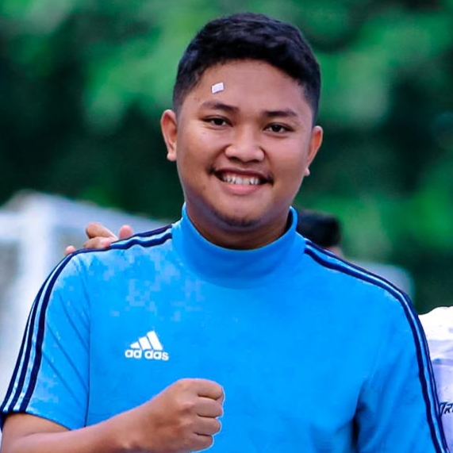

Haloo
Kontak
Instagram
Portofolio
Candrasa Asmaradanta
Foto

Saya tinggal Di Desa Jembayat RT 01/RW 09 Kecamatan Margasari Kabupaten Tegal. Hobi saya adalah bermain sepakbola. Saya adalah Mahasiswa dari Universitas Peradaban Program Studi Informatika semester 4.
Posisi yang diusulkan : Full Stack Developer
Nama Perusahaan : PT. Astra Honda Motor
Nama Personil : Candrasa Asmaradanta
Tempat/Tanggal lahir : Tegal, 16 Januari 1999
Pendidikan :
SDN Jembayat 06, 2011
SMP Negeri 1 Margasari, 2014
SMA Negeri 1 Balapulang, 2017
Pendidikan Non Formal :
Kursus : Udemy Pemrograman PHP Tahun 2021
Kursus : Bootcamp Front end Developer Tahun 2021
Penguasaan Bahasa :
Bahasa Indonesia : Baik
Bahasa Setempat : Baik
Bahasa Inggris : Kurang
Lokasi Saya
Google Maps Link